with
with  — high gain, low speed (gain × bandwidth ≈ const); a phototransistor amplifies its base photocurrent by
— high gain, low speed (gain × bandwidth ≈ const); a phototransistor amplifies its base photocurrent by  ; a Schottky photodiode avoids slow minority-carrier diffusion and detects below the gap by internal photoemission.
; a Schottky photodiode avoids slow minority-carrier diffusion and detects below the gap by internal photoemission.
Photoconductor (derivation of the gain)
A slab of thickness  , length
, length  between electrodes, absorbs intensity
between electrodes, absorbs intensity  : generation rate per volume
: generation rate per volume
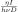
, steady excess density (
( = carrier lifetime) (Smith 1873). With bias
= carrier lifetime) (Smith 1873). With bias  an electron crosses in
an electron crosses in 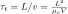
. Charge neutrality: when it leaves at the anode another enters at the cathode, so each absorbed photon lets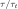
electrons through the circuit before recombination: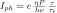
. The response time is itself, so 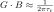
is fixed by geometry and bias.Picture
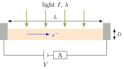
between two contacts, and the bias drives a photocurrent measured by the ammeter.Phototransistor
A bipolar transistor with a large, exposed base–collector junction: the photocurrent acts as base current and the collector current is
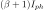
. Gain 100–1000 at the cost of speed (large junction capacitance multiplied by the Miller effect: tens of kHz to a few MHz). Used in optocouplers, slotted interrupters and reflective sensors.Schottky photodiode
A thin semi-transparent metal on a semiconductor forms a barrier  with a depletion region at the surface. Photons absorbed near the surface give carriers that are swept by drift — no slow diffusion tail — so Schottky and metal–semiconductor–metal (MSM) detectors reach > 100 GHz; good UV response (absorption near the surface, e.g. GaN, SiC). Photons with
with a depletion region at the surface. Photons absorbed near the surface give carriers that are swept by drift — no slow diffusion tail — so Schottky and metal–semiconductor–metal (MSM) detectors reach > 100 GHz; good UV response (absorption near the surface, e.g. GaN, SiC). Photons with
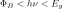
excite electrons in the metal over the barrier (internal photoemission): PtSi/Si arrays detect 3–5 µm infrared.Worked examples
- Gain: Si photoconductor
 µm,
µm, 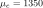
cm²/(V s),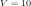
V: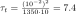
ns; with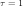
µs, , bandwidth ≈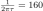
kHz. - CdS light-dependent resistor: 1 µm film,
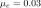
m²/(V s), ms, 10 W/m² of 550 nm light (bright room):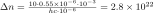
m ,
, 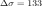
S/m. Electrodes 2 mm apart, 5 mm wide: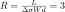
kΩ (MΩ in the dark);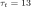
µs at 10 V,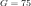
. Typical LDRs follow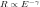
,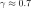
, and need tens of ms to respond. - Phototransistor:
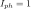
µA,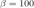
: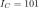
µA, into 10 kΩ: 1 V swing without an amplifier.
Engineering applications
Light sensors in street lamps and cameras (CdS, being phased out for RoHS), IR detectors (PbS, PbSe, HgCdTe photoconductors), optocouplers and encoders (phototransistors), UV flame and solar-blind detectors (Schottky GaN, SiC), high-speed MSM detectors.
Exam-style exercise
An InSb photoconductor (
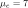
m²/(V s),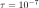
s), electrodes 1 mm apart, biased at 1 V, receives 1 µW at 4 µm with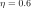
. (a) Transit time and gain. (b) Photocurrent. (c) Bandwidth.Solution
(a)
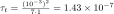
s;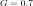
(no gain: InSb lifetime is short). (b)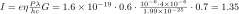
µA. (c)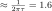
MHz. Raising increases  until heating or sweep-out limits it.
until heating or sweep-out limits it.
Pitfall
Gain larger than 1 in a photoconductor does not mean more photons are absorbed: it is the same carrier circulating; noise (generation–recombination) is amplified too, and speed drops in proportion.